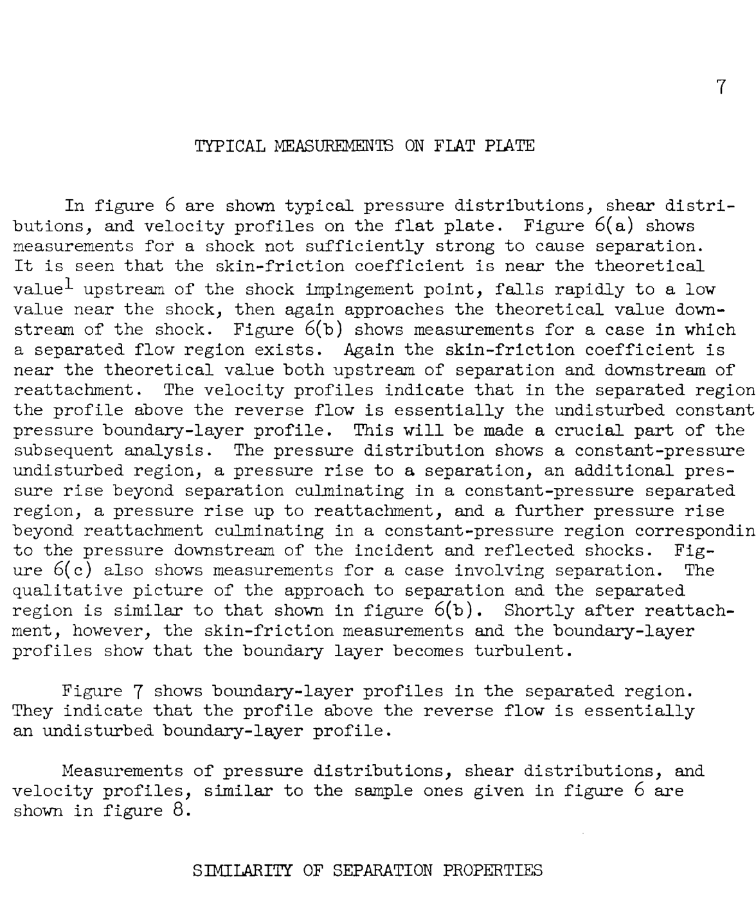
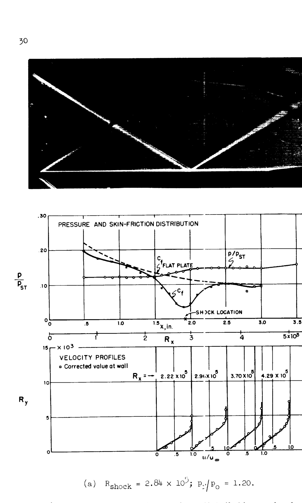
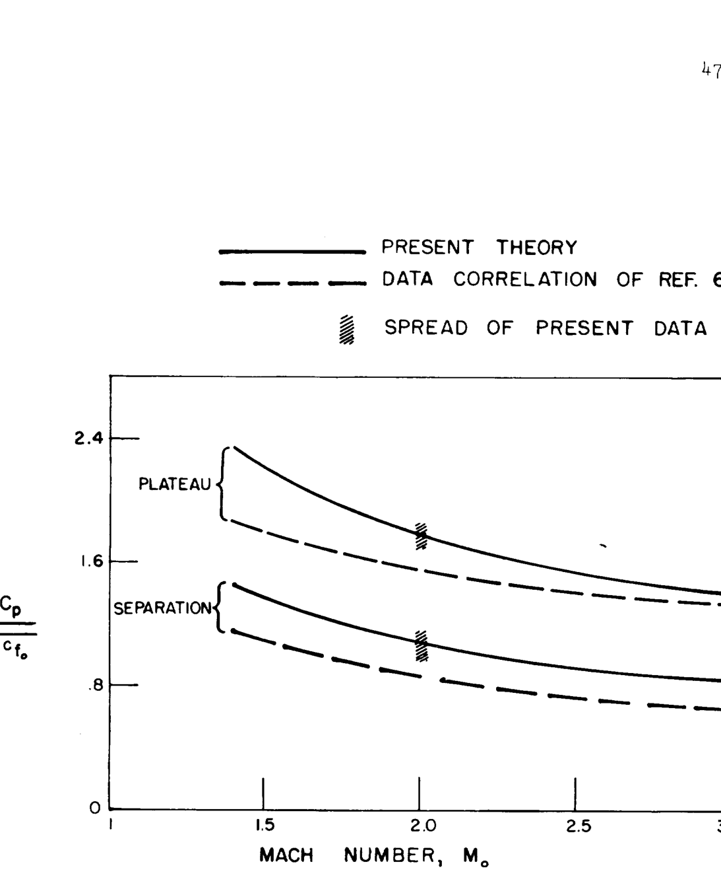
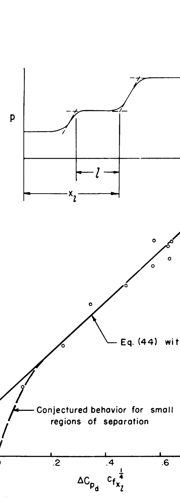

01中文摘要
给出斜激波与平板层流边界层相互作用的实验与理论研究。实验详细测量干扰区的压力分布、剪应力分布和速度剖面，据此建立可预测分离特征压力与分离区长度的模型。研究发现，当分离区足够长时，分离附近的流动参数只取决于当地条件，即具有局部相似性；这一自由干扰概念构成分析基础。基于观察到的流型和简单动量考虑，估算分离附近的压力水平，与实验符合良好；由质量与动量守恒导出分离区长度随激波强度、马赫数和雷诺数变化的规律，实验结果验证了激波强度依赖，马赫数与雷诺数依赖仍需更多数据。
02阅读说明
文章类型：实验+理论报告（NASA Memo 2-18-59W，Hakkinen、Greber、Trilling、Abarbanel，MIT，1959年3月出版，正文末署1957年5月1日；52页扫描件，OCR 质量差）。实验：6×8 英寸 M=2 连续式风洞、全展平板、可调激波发生器，测压力、Stanton 管摩阻与总压管速度剖面。理论：抬升子层（lifted sublayer）模型+动量积分，给出分离/平台压升系数与分离区长度律。已回原 PDF 核对式(2)-(20)、(27)-(28)；式(1)、(21)-(26)、(29)-(44) 的系数、指数与根号归属受扫描/OCR 限制，无法完全确认。图件 8 张可用，图表坐标轴文字多为扫描噪声。 文章类型：报告
03一句话核心与三句话摘要
M=2 平板斜激波/层流边界层干扰实验：抬升子层模型给出分离与平台压升系数及分离区长度律。
- 强激波/边界层干扰的理论预测此前只对弱激波成功，工程上更关心的强干扰主要停留在实验阶段，且缺乏压力、摩阻、速度剖面的系统数据与定量模型。 AI概括
- 在 M=2、Re_x=1–6×10^5、激波静压比至 2.4 的平板上测得：分离区上方速度剖面近似未扰动边界层，分离压升 Cps=√(2cf0/β)、平台压升 Cppl=1.65Cps。 AI概括
- 分离区长度主要取决于超过起始分离所需的那部分驱动压差，对雷诺数仅按 1/8 次幂弱依赖；实验支持激波强度依赖，但马赫数与雷诺数依赖仍需更多实验。 原文明确
04核心内容清单
| 要点 | 类型 | 重要性 | 原文依据 | 属性 |
|---|---|---|---|---|
| 分离区上方（反向流以上）的速度剖面基本就是未扰动的常压边界层剖面，边界层可视为从壁面“抬起”高度 ε；这是全文分析的核心观察。 | 关键观察/模型前提 | A | 扫描页9、图7；扫描页22 | 原文明确 |
| 基于抬升子层+壁面抛物线子层，导出分离压升 Cps=√(2cf0/β)，与实测数据在散度内相关良好。 | 理论结果 | A | 式(2)-(13)，扫描页9-13；图10 | 原文明确 |
| 平台压升由 Cppl<1.9Cps 与 Cppl>Cps 取中值，得 Cppl=1.65Cps；M0=2 时文献6关联式给 2Cps（绝对值低约 13%），但比值 1.68 与本文一致。 | 理论结果/对比 | A | 式(26)(29)(30)，扫描页17-19；图10、图12 | 原文明确 |
| 起始分离的压升为 Cps 的 2 倍，即 (ΔCp)incipient=2Cps；图10 数据支持。 | 理论结果 | A | 式(32)，扫描页20；图13 | 原文明确 |
| 分离区长度主要取决于驱动压差（约正比），对雷诺数仅弱依赖（约 1/8 次幂）；实验拟合线不过原点，短分离区增长更快。 | 长度律 | A | 式(40)(42)(44)，扫描页21-24；图14 | 原文明确 |
| 压力分布呈五段结构：未扰动—升至分离—升至平台（恒压分离区）—升至再附—再附后均匀；cf 相应在分离点归零、再附后恢复。 | 现象 | A | 扫描页9，图6、图9 | 原文明确 |
| Stanton 管标定满足 5/3 次幂律，无明显压缩性影响；但标定在零压力梯度下完成，用于强逆压梯度区存在不确定性。 | 测量技术 | B | 扫描页7-8，图5 | 原文明确 |
| 分离点定位误差大：仪器不能可靠测负剪应力，需外推零点，因该处压力梯度大，导致 Cps 散点大。 | 不确定度 | B | 扫描页8、扫描页13 | 原文明确 |
| 图6(c) 工况在再附后不久边界层转捩为湍流，说明高 Re 端已接近层流干扰的适用边界。 | 实验现象/适用范围 | B | 扫描页9 | 原文明确 |
| Kármán 动量积分方程配合实测分离处压力梯度可预测 Cps，但 Pohlhausen-Gruschwitz 参数不能描述该压力梯度，原因是速度剖面表示不足。 | 理论辨正 | B | 式(14)-(23)，扫描页14-17 | 原文明确 |
| 实验覆盖台阶、拐角、反射激波三种分离诱发方式，且分离参数相似，支持“分离只取决于当地条件”的假设。 | 相似性论证 | B | 扫描页10、扫描页13-14 | 原文明确 |
05引言：研究问题与领域缺口
【原文明确】激波与边界层干扰已有大量理论与实验研究：线性化弱干扰分析只对很弱的激波成功，工程上更强的激波干扰仍主要依赖实验；半解析路线（Lees 的 Pohlhausen 方法、Crocco-Lees 积分处理）假定边界层内无压力梯度，此假定除激波入射点附近外合理，但所选的特定速度剖面可能严重限制分离流的适用性，因而需要详细实验指导模型选择（扫描页3-4）。【原文明确】已有研究指出：当激波诱导的分离区足够长时，分离附近流动参数只取决于当地条件；这构成本文分析与建模的基础（扫描页4）。【原文明确】本文目标：测量压力、剪应力与速度剖面，确认分离参数的相似性，用动量考虑估计分离附近压升，并由质量/动量守恒导出分离区长度随激波强度、马赫数、雷诺数变化的规律（扫描页4）。【AI推断】因此文章同时是实验报告与“自由干扰”标度律的早期定量建模工作。
06流动条件与几何构型
| 项目 | 数值/描述 | 依据 | 备注 |
|---|---|---|---|
| 风洞 | MIT 6×8 英寸连续式超声速风洞，固定 M=2 喷管，气流向上 | 扫描页6 | |
| 总压范围 | 约 5–15 psia | 扫描页6 | 用蒸汽引射器抽真空；最低压力因压力计精度未成功使用 |
| 来流马赫数 | M=2（固定喷管） | 扫描页6 | |
| 基于前缘至激波干扰点距离的雷诺数 | Re_x=1×10^5–6×10^5 | 扫描页8 | 由总压（即 Re）水平变化实现 |
| 激波强度范围 | 静压比至 2.4 | 扫描页8 | |
| 平板 | 全展、尖前缘、抛光平板；45 个静压孔，流向间距 0.1 英寸 | 扫描页7，图1、图2 | |
| 边界层状态 | 层流（除图6(c) 工况再附后转捩） | 扫描页9 | |
| 壁面热条件 | 文中未提及（板内埋热电偶仅测温，未说明绝热或等温控制） | 扫描页7 | |
| 工况 6(a) | Rshock=2.84×10^5；pf/p0=1.20；未分离 | 图6(a)注，扫描页32 | |
| 工况 6(b) | Rshock=2.96×10^5；pf/p0=1.40；有分离区 | 图6(b)注，扫描页33 | |
| 工况 6(c) | Rshock=3.29×10^5；pf/p0=1.91；有分离，再附后转捩 | 图6(c)注，扫描页34 | |
| 工况 8(a) | Rshock=2.70×10^5；pf/p0=1.15 | 图8(a)注，扫描页36 | |
| 工况 8(b) | Rshock=2.87×10^5；pf/p0=1.25 | 图8(b)注，扫描页37 | |
| 工况 8(c) | Rshock=3.37×10^5；pf/p0=1.32 | 图8(c)注，扫描页38 | |
| 工况 8(d) | Rshock=3.65×10^5；pf/p0=1.75 | 图8(d)注，扫描页39 | |
| 工况 8(e) | Rshock=3.69×10^5；pf/p0=2.16 | 图8(e)注，扫描页40 | |
| 工况 8(f) | Rshock=3.74×10^5；pf/p0=2.40 | 图8(f)注，扫描页41 | |
| 工况 8(g) | Rshock=3.75×10^5；pf/p0=1.56 | 图8(g)注，扫描页42 | |
| 工况 8(h) | Rshock=3.96×10^5；pf/p0=1.35 | 图8(h)注，扫描页43 | |
| 工况 8(i) | Rshock=4.02×10^5；pf/p0=1.47 | 图8(i)注，扫描页44 | |
| 工况 8(j) | Rshock=4.44×10^5；pf/p0=2.28 | 图8(j)注，扫描页45 |
07核心现象与关键参数
| 参数 | 定义 | 数值 | 关系/说明 | 依据 |
|---|---|---|---|---|
| β | √(M0²-1)，可压缩相似参数 | M0=2 时 β=√3≈1.732 | 出现在 Cps、长度律与动量积分中 | 符号表，扫描页5；式(3)(13) |
| Chapman-Rubesin 常数 C | C=(μ_w/μ∞)(T∞/T_w) 型比值（符号表排版受损） | 本实验条件下 C≈0.92 | cf=cf_B·C | 扫描页9脚注1 |
| 分离压升系数 Cps | 分离点压升与来流动压之比 | √(2cf0/β) | 与 Gadd 1.39√(cf0/β)、CKL 1.19√(cf0/β) 对比 | 式(13)，扫描页13 |
| 平台压升系数 Cppl | 恒压分离区压力与来流动压之比 | 1.65Cps | 介于 Cps 与 1.9Cps 之间 | 式(30)，扫描页19 |
| 起始分离压升 | 刚能使某点壁面剪应力为零的压升 | 2Cps | 用于定义驱动压差 ΔCpd=Cpf-2Cps=Cpf-1.21Cppl | 式(32)(43)，扫描页20、23 |
| 驱动压差 ΔCpd | 最终压升减去起始分离压升 | Cpf-2Cps | 分离区长度律的自变量 | 式(43)，扫描页23 |
| 分离区长度 L | 分离点到再附点的流向距离 | L/x_z=2.55[1+((γ-1)/2)rM0²]^{3/2}β^{-1/4}cf_xz^{?}ΔCpd+0.097（式44，幂次受 OCR 限制） | 约正比于 ΔCpd，对 Re 约 1/8 次幂弱依赖 | 式(42)(44)，扫描页21-24 |
| 常数压力区长度 z / 参考长度 x_z | z 为平台长度，x_z 为前缘到平台末端距离 | 文中未给出单值 | 出现在式(38)(40)(42)(44) | 符号表；扫描页22-23 |
| Stanton 管响应 | 管口压力与静压差与剪应力的关系 | ∝τ^{5/3} | 图5 标定曲线斜率 -5/3 | 扫描页7-8，图5 |
| 总压管尺寸 | 缝隙式总压管 | 高约 0.004 英寸，开口约 0.001 英寸 | 位置精度优于 0.001 英寸 | 扫描页7 |
08方法与数据
【原文明确】实验在 MIT 燃气轮机实验室 6×8 英寸连续式超声速风洞进行，固定 M=2 喷管、气流向上，配纹影系统；总压约 5–15 psia，用蒸汽引射器抽真空（扫描页6）。平板为全展、尖前缘，抛光以避免转捩；板上钻 45 个静压孔（No.80 钻头），流向间距 0.1 英寸，接汞与 Meriam 液体（比重 2.95）压力计；板内埋热电偶，驻室同样测总压/总温（扫描页7）。激波发生器沿用 Barry、Shapiro & Neumann 的可调角度装置（扫描页7）。速度剖面用缝隙式总压管测量，管高约 0.004 英寸、开口约 0.001 英寸，可用洞外机构流向/法向移动，位置由精度优于 0.001 英寸的测高仪读取；速度按边界层内静压与总温不变的标准方法换算，除激波入射点附近外认为足够准确（扫描页7）。同一总压管贴壁用作 Stanton 管测摩阻，并与专门建造的浮元式绝对摩阻天平对比标定；理论预期管口与当地静压之差正比于剪应力的 5/3 次幂（扫描页7，图5）。分离位置取贴壁总压管测得剪应力为零之点；由于仪器不能可靠指示负剪应力，常需由上游正剪应力外推零点，这会使分离压力因该处压力梯度大而误差显著（扫描页8）。测量范围：激波强度至静压比 2.4，基于前缘至激波干扰点距离的 Re=1–6×10^5（扫描页8）。
| 项目 | 内容 | 依据 | 备注 |
|---|---|---|---|
| 实验设施 | 6×8 英寸连续式超声速风洞，M=2 固定喷管，蒸汽引射器调压，配纹影 | 扫描页6 | |
| 模型 | 全展尖前缘平板，抛光；可调角度激波发生器 | 扫描页7，图1、图2 | |
| 压力测量 | 45 个静压孔接汞/Meriam 压力计；驻室测总压、总温；板面埋热电偶 | 扫描页7 | |
| 速度剖面测量 | 缝隙式总压管（高 0.004 英寸、开口 0.001 英寸）逐点移测，按静压与总温不变换算速度 | 扫描页7，图3 | |
| 摩阻测量 | 同一总压管贴壁作 Stanton 管，与浮元式绝对摩阻天平对比标定；满足 5/3 次幂律 | 扫描页7-8，图4、图5 | |
| 分离点判定 | 贴壁总压管测得剪应力为零处；不能测负剪应力时由上游正剪应力外推 | 扫描页8 | |
| 最小分离激波强度 | 调节激波发生器使某点剪应力恰为零 | 扫描页8 | |
| 参数范围 | 静压比至 2.4；Re_x=1–6×10^5；非刚性参数扫描，受风洞压力级控制限制 | 扫描页8 | |
| 理论方法 | 抬升子层力平衡+抛物线子层匹配；Kármán 动量积分；Pohlhausen-Gruschwitz 参数；反流区质量/动量平衡 | 扫描页9-23 | |
| 数据对比 | 与 Gadd 理论、Chapman-Kuehn-Larson 关联式、文献6 数据关联式对比 | 扫描页12-19，图10-图12 |
09核心推导与公式
把分离区足够长时的干扰分解为两部分：分离附近的局部相似特性（只依赖当地 M、Re）与分离区长度和激波强度的关系。局部部分用“抬升子层”模型：外层边界层近似未扰动、被高度 ε 抬起，内层子层动量可忽略，由力平衡与压升-位移关系消去 ε 得分离压升；再用壁面抛物线子层与未扰动剖面匹配定出分离点的 cf，得到 Cps 的显式表达式。平台与长度分别用反流区动量平衡和 Kármán 积分方程估计。
关键假设
- 边界层内无压力梯度（法向常压），除激波入射点附近外成立（扫描页3）
- 分离区足够长，分离附近参数只取决于当地条件，与诱发方式无关（扫描页10）
- 外层边界层近似未扰动，仅被高度 ε 抬起；子层动量可忽略（扫描页9-10）
- ε 增长对应压升，且为小扰动线性关系 Cp=(2/β)dε/dx（式3）
- 近壁子层可用抛物线剖面描述（式8）；τ(ε1)≈τ0，忽略调整区（扫描页11）
- 平台附近对称反流假设，用于给出 Cppl 上界（扫描页17）
- 长度推导中忽略 ∫Cp'' 型积分项、忽略混合并取 cf≈cf_xz（扫描页21-23）
- 驱动压差取最终压升与起始分离压升之差（扫描页23）
推导过程
引用 Chapman-Kuehn-Larson 与 Gadd：分离区足够长时，分离附近条件与诱发分离的机构无关，所有重要参数只是 M 与 Re 的函数。于是把问题分为 (1) 相似分离特性（只依赖当地条件）与 (2) 分离区长度-激波强度关系。
设子层厚度 ε、外层在 ε 处剪应力 τ_ε，子层动量可忽略，则高度 ε 内压力与剪应力平衡；压升由 ε 的增长产生，取小扰动线性关系。两式消去 ε 得压升与剪应力差沿程的积分关系。
对式(4) 左端分部积分；分离前 Cp'' 除小区间外很小，右端积分相对 Cp² 可忽略；在 cf_w=0 的分离点取值，得分离压升只与分离点处子层边缘的摩阻系数有关。
由壁面平衡 dp/dx=(∂τ/∂y)_w 积分得子层速度剖面；在分离点壁面剪应力为零时，剖面退化为抛物线。
在高度 ε1 处令速度连续（抛物线剖面等于被抬起的未扰动剖面）、速度梯度连续、剪应力连续（τ(ε1)=τ0），三条件解出抬升高度 ε。
分离点 τ_w=0，由匹配关系得 τ_ε=τ0/2；代回式(6) 得分离压升系数的显式式(13)，只依赖分离点上游的常压摩阻系数与 β。
Gadd 理论给 Cps=1.39√(cf0/β)；Chapman-Kuehn-Larson 数据关联在 M0=2 给 1.19√(cf0/β)；本文式(13) 与两者同量级，图10 数据在散度内吻合。
在小扰动下写出 Kármán 积分方程；把动量厚度取常压值、位移厚度写成常压值加偏差，并用抬升关系替代式(3)，代入后在分离点 cf_w=0 处取值，得 Cps 的另一种表达；再用 Pohlhausen-Gruschwitz 参数 Ks=-0.157 与式(19)(20) 估算分离处压力梯度，结合 Chapman-Rubesin 的 Hc 关系得式(23)。
分离后抛物线子层不再适用；忽略同量级反号的反流惯性与压力分布曲率，得与分离前相同的条件式(24)。设平台处反流对称，cf 最大值小于约 0.9cf0，得平台压升上界 Cppl<1.9Cps。另把 u=0 线视为边界层绕流的“壁”，在高度 h 上写动量方程，假设 A、B 两点摩阻偏差相同且平台附近 cf_w≈-cf_h，得下界 Cppl>Cps。取二者中值得 Cppl=1.65Cps。
对刚能使某点剪应力为零的激波，外部激波系维持当地压力梯度，但压力跳跃在接近壁面时被膨胀逐步抵消，故压升主要来自自诱导效应；假设边界层增厚与变薄对称，得起因分离压升为 2Cps。
完全分离时，分离区高度由被主激波“剩余”过压驱动进入反流的流体量决定。对 u=0 线以上的边界层写动量积分，在再附段忽略某些积分项，得驱动压力与反流速度的关系；由连续性把反流质量通量与 hmax、Δx 联系；再在 hmax 处作动量平衡（假设反流对称），消去速度尺度并取 hmax 与平台长度的比例，得长度律式(39)(40)(42)：长度强烈依赖驱动压差，仅弱依赖 Re。
驱动压差取 ΔCpd=Cpf-2Cps=Cpf-1.21Cppl；图14 显示长度函数与 ΔCpd 近似线性但不过原点。短分离区反流未充分建立、有效 cf 远小于当地常压值，故增长更快；拟合斜率大于式(42)，对应 cf≈0.82cf_xz。据此把式(42) 改写为带常数 0.097 的式(44)。
适用边界：推导建立在“分离区足够长、外层近似未扰动、子层动量可忽略”的理想化图像上；式(3) 的线性压升关系与小扰动假设限制其用于强干扰；平台压升只是上下界中值，不是严格解；长度律中忽略了混合、取 cf≈cf_xz，且实验只验证了激波强度依赖，M 与 Re 依赖未验证；Stanton 管标定在零压力梯度下完成。另：式(1)、(21)-(26)、(29)-(44) 的系数/指数在扫描件中不清晰，本记录未给出无法确认的 LaTeX。
10结果：主要发现与关键证据
【原文明确】典型测量（图6）：未分离时 cf 在激波前接近理论值，激波附近迅速下降，波后再回升；分离时压力经历“未扰动—升至分离—继续升至平台—再升至再附—再附后均匀”的多段结构，cf 在分离前降至零、再附后恢复，分离区上方速度剖面基本就是未扰动的常压边界层剖面（扫描页9，图6、图7）。【原文明确】图6(c) 的一个工况在再附后不久边界层转为湍流（扫描页9）。【原文明确】图8 给出 10 个工况（Rshock=2.70–4.44×10^5，pf/p0=1.15–2.40）的压力、剪应力与速度剖面（扫描页36-45）。【原文明确】分离压升实验数据在散度内与 Cps=√(2cf0/β) 相关良好；Gadd 理论给 1.39√(cf0/β)，Chapman-Kuehn-Larson 数据在 M0=2 给 1.19√(cf0/β)，本文式(13) 与之同量级（扫描页13-14）。【原文明确】平台压升由两个界估计 Cppl<1.9Cps 与 Cppl>Cps 取中值得 Cppl=1.65Cps；与文献6 关联式相比，M0=2 时其绝对值低约 13%，但其 Cppl/Cps=1.68 与式(30) 一致（扫描页17-19）。【原文明确】起始分离压升取 (ΔCp)incipient=2Cps，图10 数据支持（扫描页20）。【原文明确】分离区长度与驱动压差近似线性，但拟合线不过原点、斜率大于式(42) 的预测；实验斜率对应 cf≈0.82cf_xz，据此给出含常数 0.097 的修正式(44)（扫描页23-24，图14）。
| 发现 | 证据 | 证据类型 | 强度 | 位置 | 属性 |
|---|---|---|---|---|---|
| 分离区反向流上方的速度剖面基本是未扰动的常压边界层剖面，边界层可视为被抬起高度 ε。 | 图6、图7 的剖面；扫描页9 明确表述；扫描页22 结论复述 | 实验（总压管剖面） | 强 | 扫描页9，图6、图7 | 原文明确 |
| 分离压升 Cps=√(2cf0/β) 能在实验散度内关联数据。 | 图10 中 Cps 随 cf0 的变化及式(13)、(31)、(32) 曲线；扫描页13 | 理论-实验对比 | 强 | 式(13)，扫描页13，图10 | 原文明确 |
| 平台压升 Cppl=1.65Cps；文献6 关联式的比值为 1.68，与本文一致，但其 M0=2 的绝对值比式(31) 低约 13%。 | 图10、图12；扫描页17-19 文字 | 理论-数据对比 | 强 | 式(30)(31)，扫描页17-19，图12 | 原文明确 |
| 起始分离压升为 2Cps，图10 数据支持该简单观点。 | 式(32)；图10 中起始分离数据点；图13 流型示意 | 理论-实验对比 | 中 | 式(32)，扫描页20，图10、图13 | 原文明确 |
| 分离区长度近似正比于驱动压差，对 Re 仅约 1/8 次幂弱依赖；拟合线不过原点，短分离区增长更快。 | 图14 的线性趋势与截距；式(44)；扫描页23-24 讨论 | 实验关联 | 中 | 式(42)(44)，图14 | 原文明确 |
| 压力分布呈未扰动—分离—平台—再附—均匀的多段结构，cf 在分离点归零、再附后恢复；某工况再附后转捩。 | 图6(a)(b)(c)、图8、图9；扫描页9 | 实验（压力+摩阻+剖面） | 强 | 扫描页9，图6、图8、图9 | 原文明确 |
| Stanton 管标定满足 5/3 次幂律且无明显压缩性效应，但零压力梯度标定用于强逆压梯度区有不确定性。 | 图5 标定曲线；扫描页7-8 说明 | 测量技术验证 | 中 | 图5，扫描页7-8 | 原文明确 |
| 分离点定位误差是 Cps 散点大的主因：无法可靠测负剪应力，需外推零点，而该处压力梯度很大。 | 扫描页8、13 的文字说明；图10 数据散度 | 误差分析 | 强 | 扫描页8、13 | 原文明确 |
11机制解释与论证链
【原文明确】激波造成的逆压梯度使壁面剪应力在激波上游逐渐下降；压升达到阈值时剪应力归零（起始分离），更大压升则出现分离区。分离区内近壁为反向流，其上方边界层几乎保持未扰动的常压剖面，相当于整个边界层被抬起高度 ε；分离点压升由这一抬升所需的局部力平衡决定，故只依赖当地条件（扫描页9-13、22）。【原文明确】分离区内压力先升至平台并保持恒定（平台压升约为分离压升的 1.65 倍），随后在再附段再次上升；再附后压力达到入射+反射激波对应的均匀值（扫描页9、17-19）。【AI推断】因此分离区长度由“主激波总压升扣除平台与再附所需压升后剩余多少过压来驱动反流”决定，这解释了长度对驱动压差的强依赖和对 Re 的弱依赖（扫描页20-24）。
12讨论：结论、贡献与局限
【原文明确】作者强调：分离区足够长时压力水平只依赖当地条件；剖面显示边界层主要在近壁被改造，外层仍近似未扰动边界层（扫描页22）。在此观察上建立的抬升子层模型给出的分离压升与实测吻合；Kármán 动量积分方程在给定分离处压力梯度时也能预测分离压升，但 Pohlhausen-Gruschwitz 参数因剖面表示不足而失效，积分方程本身并未失效（扫描页14-17）。【原文明确】长度分析表明分离区长度几乎正比于“超过起始分离所需”的压升，且对雷诺数只有约 1/8 次幂的弱依赖；实验只验证了激波强度依赖，马赫数与雷诺数依赖需更多实验（扫描页22-24）。【AI推断】文章的核心方法论是“自由干扰”思想：把分离附近的局部平衡与外部激波强度解耦，这使其结论可推广到台阶、拐角、反射激波等不同诱发方式（文中数据即来自这三类，扫描页13-14）。
作者结论
【原文明确】作者结论：干扰的定性图像是——激波逆压梯度使上游壁面剪应力下降，达到阈值时归零，更大压升则出现分离区；分离区足够长时分离压力水平只依赖当地条件；剖面显示只有近壁被改造、外层仍为未扰动边界层，据此建立的抬升子层分析与实测吻合；Kármán 积分方程在能给出分离处压力梯度时也可预测分离压升（扫描页22）。分离区长度几乎正比于超过起始分离所需的压升，对 Re 只有约 1/8 次幂的弱依赖，实验支持激波强度依赖，M 与 Re 依赖需更多实验（扫描页22-24）。【AI概括】核心贡献是把“局部自由干扰”与“外部激波强度”解耦，给出 Cps、Cppl、起始分离与 L 四个可用的定量关系。
主要贡献
- 给出 M=2 平板上斜激波/层流边界层干扰的压力、摩阻与速度剖面同步测量（13 个工况），含未分离、分离与再附后转捩情形（图6、图8）
- 提出“抬升子层”模型并导出 Cps=√(2cf0/β)，与 Gadd 理论及 CKL 数据同量级（式13）
- 给出平台压升 Cppl=1.65Cps 与起始分离压升 2Cps 的定量估计（式30、32）
- 导出分离区长度律：强依赖驱动压差、对 Re 约 1/8 次幂弱依赖，并用实验斜率修正（式42、44）
- 用 Stanton 管+浮元天平标定实现平板局部摩阻与分离点测量（图4、图5）
局限与未解决问题
【原文明确】作者承认：风洞压力级控制使其无法按严格参数扫描方案测量；分离点定位受不能测负剪应力限制，Cps 散点大；Stanton 管标定在零压力梯度下完成，强压力梯度区精度下降；总压管速度换算假定边界层内静压与总温不变，在激波入射点附近不准确；长度律的 M、Re 依赖缺乏足够实验验证（扫描页7-8、13、24）。【AI推断】仅 M=2、Re_x≤6×10^5、层流、绝热条件未明确控制；平板全展但侧壁边界层影响未讨论；图6(c) 已出现再附后转捩，说明高 Re 端接近适用边界；扫描件 OCR 严重，式(1)、(21)-(26)、(29)-(44) 的细节无法完全复核。
13对高速流动与工程的意义
【原文明确】报告指出该构型此前主要停留在实验阶段，强激波干扰缺乏定量模型；本文给出可用的压力水平与长度估计（扫描页3-4）。【AI推断】对高速流动的意义：(1) Cps、Cppl 的关系可作为层流干扰的快速工程估计与 CFD 校验基准；(2) “分离只依赖当地条件”支持把不同诱发方式（台阶、拐角、入射激波）的数据归一化比较；(3) 分离区长度对 Re 的弱依赖意味着缩尺实验的分离区尺度较易外推，但驱动压差必须匹配；(4) 摩阻与分离点测量技术（Stanton 管标定）对早期超声速实验设计有参考价值。以上工程外推为推断，原文未涉及具体部件。
14核心图件




15可引用原文素材
| 原文短句 | 可支持的观点 | 位置 | 使用建议 |
|---|---|---|---|
| “the profile above the reverse flow is essentially an undisturbed boundary-layer profile” | 抬升子层模型的核心观察 | 扫描页9，图7 附近 | 引用模型前提 |
| “conditions near separation are independent of the agency which induced separation” | 分离参数的局部相似性 | 扫描页10 | 论证自由干扰思想 |
| “all significant parameters are then functions of Mach number and Reynolds number” | 相似性假设 | 扫描页10 | 说明模型适用条件 |
| “small errors in the location of the separation point lead to large errors” | Cps 散点大的原因 | 扫描页13 | 讨论实验不确定度 |
| “the length of the separated region depends strongly on the driving pressure” | 长度律主依赖 | 扫描页23 | 引用长度关系 |
| “only weakly on the Reynolds number” | 长度对 Re 弱依赖 | 扫描页23 | 与“1/8 次幂”配合引用 |
| “inversely proportional to the eighth root of the Reynolds number” | Re 依赖的定量表述 | 扫描页24 | 缩尺外推讨论 |
| “the boundary layer becomes turbulent” | 再附后转捩的工况 | 扫描页9，图6(c) | 说明层流假设的边界 |
16最终核验
| 核验项 | 结论 |
|---|---|
| 仅基于全文 | 是。全部内容取自 bundle 的 52 页扫描文本与图注，公式另回原 PDF 第11-15、18页核对；未引入外部知识或文献数据。 |
| A 级要点有依据 | 是。A 级条目（剖面相似、Cps 式13、Cppl=1.65Cps、起始分离 2Cps、长度律、五段压力结构）均有式号+扫描页（或图号）依据。 |
| 属性标注 | 是。core_points、three_sentence、findings 逐条标注；mechanism 与 significance 中的推断部分明确标为【AI推断】。 |
| 覆盖范围 | 52 页全部读到 EOF（含图页与参考文献）；8 张抓取图件中选用 4 张；式(1)、(21)-(26)、(29)-(44) 因扫描质量未完整核对，已在 derivation.limits 与 read_note 注明。 |
| 无编造 | 未编造页码、图号或数据。工况参数逐条来自图6/图8 注；无法确认的公式系数、根号内是否含 β、式(44) 的 cf 指数均未写入 LaTeX，改以文字说明并注明“受限于材料”。 |
需回原文确认
- 式(1) 中 ΔCp 与 cf0 的比例系数是多少？扫描页10 的式(1) 符号缺失。
- 式(21)、(23) 中 β 是否位于根号内？式(31) 根号内是 cf0 还是 cf0/β？OCR 无法确认。
- 式(33)-(42) 的完整形式与 hmax/z 比例常数不明，式(44) 中 cf_xz 的指数是 -1/4 还是 +1/4？
- 壁面热条件（绝热/等温）未说明，板温与恢复温度的关系无法判断，是否影响 C≈0.92 的取值？
- 全展平板两侧壁边界层对中心线二维性的影响未讨论；纹影是否显示三维效应？
- 图6(c) 再附后转捩的判据是 cf 还是剖面形状？转捩位置未给出定量值。
- 实验段静压与总温沿程是否恒定（速度换算的前提）？文中只称“假定”。
17关联文献
依据标签、板块、构型与作者脉络自动关联，可据此追踪同一问题的前序与后续工作。
18引用格式
选择期刊风格后复制；出处保留原刊名。BibTeX 可直接用于 LaTeX。
引用格式
Hakkinen, R. J., Greber, I., Trilling, L. & Abarbanel, S. S. 1959 The Interaction of an Oblique Shock Wave with a Laminar Boundary Layer. NASA Memorandum 2-18-59W. https://ntrs.nasa.gov/search.jsp?R=19980231989
PDF上传 PDF 并更新本页
本页缺少全文、摘要或图件时，可在浏览器本地补入 PDF。解析完全在本机完成，不上传网络；完成后会更新本页的 PDF 打开链接、原摘要、IMRaD 机器抽取、关键句与含图页面。复杂的公式语义与中文深度解读仍以原文和既有精读记录为准。
Zotero 笔记摘录
Hakkinen R J , Greber I , Trilling L ,et al.The interaction of an oblique shock wave with a laminar boundary layer. NASA Memo 2-18-59W.1959.